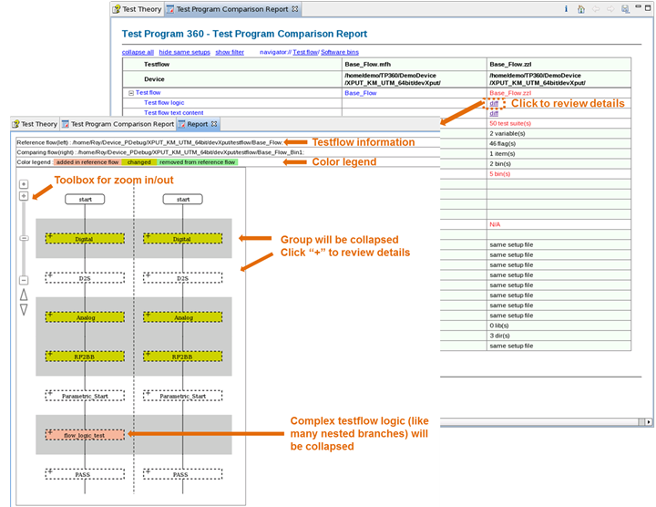
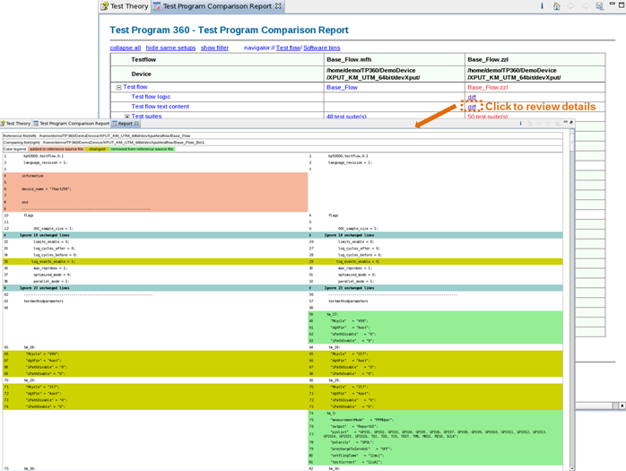
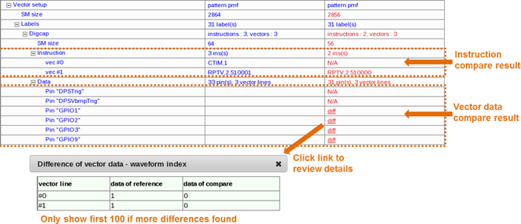
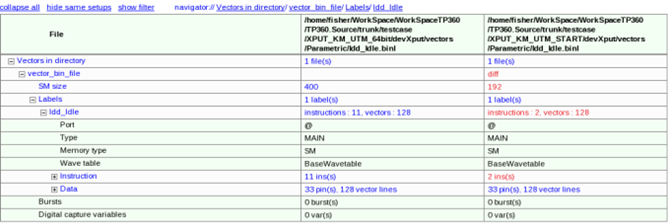
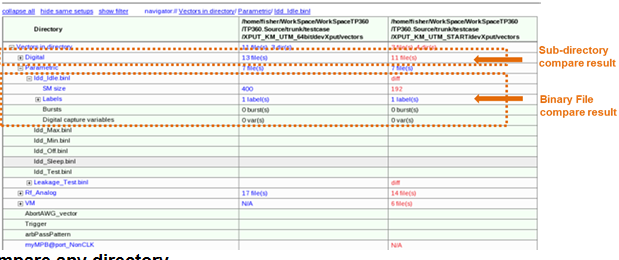
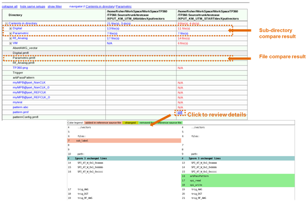
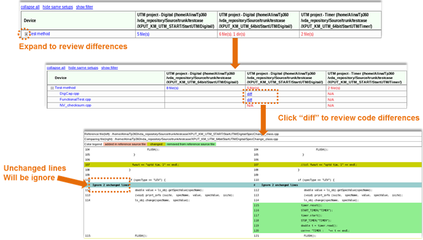

Comparison reports
In this topic, you get an overview of the comparison reports about comparing testflows, vector files, directories and test methods.
Testflows comparison report
This report presents testflow comparisons for testflow logic, testflow text content, pins, levels, timings, vectors, analog setups, test tables, test methods with testflows, the test method libraries, and the technologies and licenses.
- The following graphic displays the report for comparisons of testflow logic, which is a
diagram containing comparisons of suites order, bypass, set pass, group bypass, suite branch,
single bin and multiple bin, loop (such as repeat, while, if/else branch), spec change special
suite, prints and print to data log.

- The following graphic displays the report for comparisons of testflow text
contents.
Testflow checksum can be changed because of some blank lines or blank space characters. Test Program Comparator compares the contents of testflows and highlights the differences.

Vectors comparison report
Only the pattern master based vectors are compared:
- Basic setups of vectors
- Instructions of vectors
- Setups of DC scales
- Binary data of pins (optional, the comparison time is long)
If the sub-files have the same relative paths, the same file names, or the same file contents, Test Program Comparator does not check them and shows the number of them in the report.

Binary vector files comparison report
This comparison compares:
- Basic setups of vectors
- Instructions of vectors
- Setups of DC scales
- Binary data of pins (optional, the comparison time is long)

Vector directories comparison report
Only binary vector files and the sub-directories of the selected directories are compared. The file contents are not compared.

Directories comparison report
All files and sub-directories of the selected directories are compared, but the file contents are not compared except for ASII files.

Test methods comparison report
Codes of selected UTM projects are compared.

Test method libraries comparison report
Test method libraries of selected items are compared.
Functional changes
- Introduced in SmarTest 7.2.2
- TP360 3.10.4: Test method libraries are added in the report.